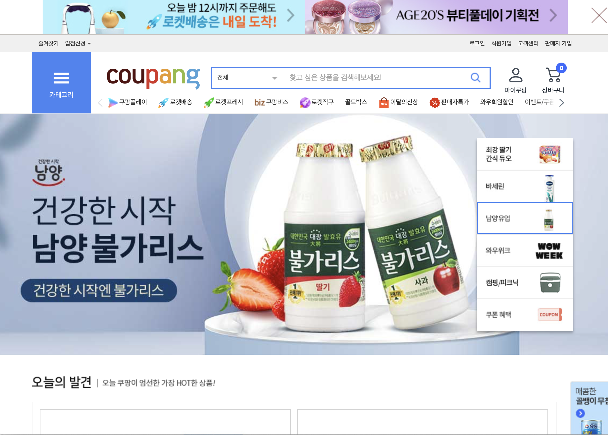
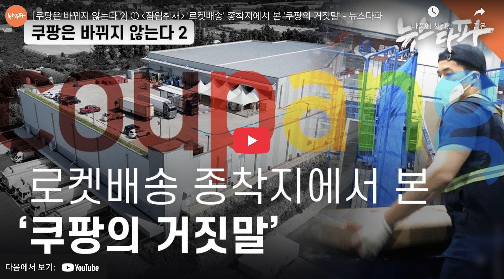
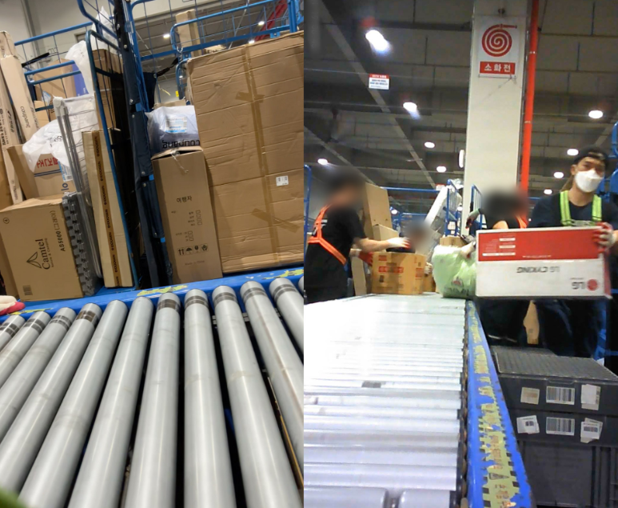
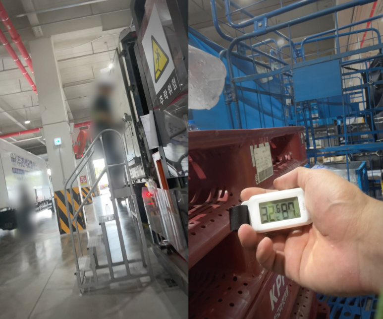
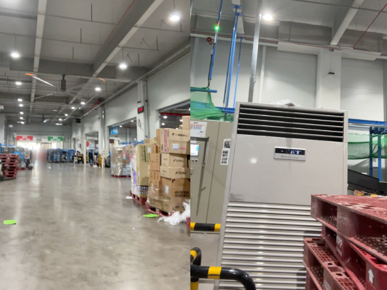
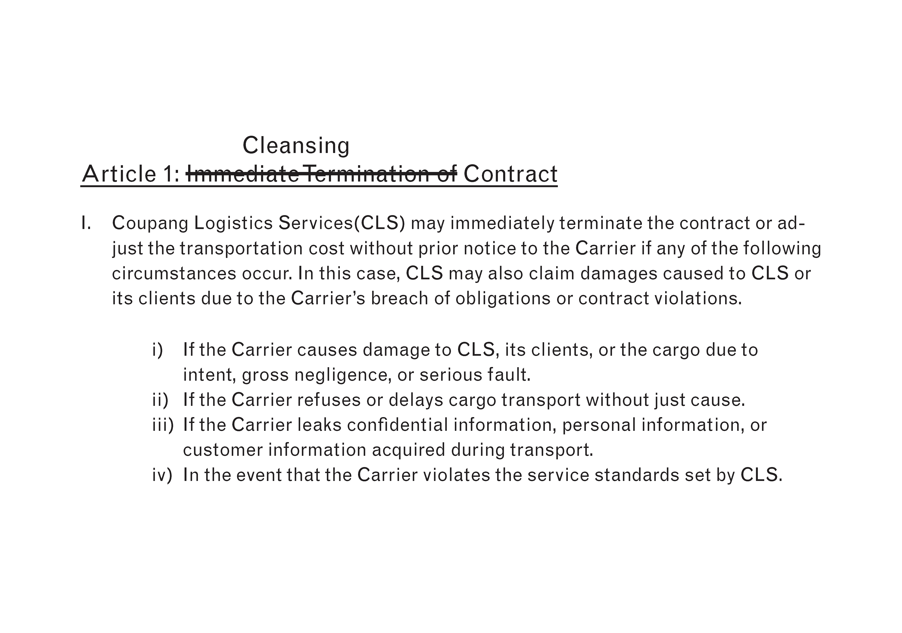
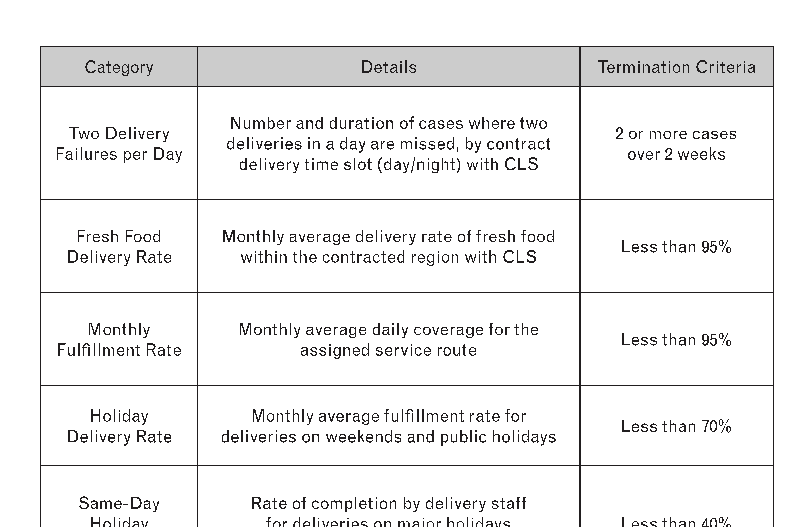

fig 1. An inside view of Coupang's Jeju Sub-Hub, filmed on August 21. Temporary workers are placing boxes containing delivery items onto the conveyor belt.
Well, who is cleansing the carriers at this very moment?
First of all, what does
“cleansing the carriers” even mean?
It essentially means that Coupang enforces outrageous labor contracts, pushing many delivery workers to the point of extreme overwork—sometimes even to death.
I’ve frequently come across news reports in South Korea about delivery workers, particularly those employed by Coupang, suffering accidents or even dying on the job.
This raises important questions.
Why must so many individuals put their lives at risk for this kind of labor? And why are such incidents happening so repeatedly?
[2020] Death of a Coupangman at Ansan 1 Camp/Death of a worker at Coupang Incheon Logistics Center 4 Death of a cook at Coupang Cheonan Logistics Center Death of a worker at Coupang Daegu Chilgok Logistics Center [2021] Death of a worker at Coupang Dongtan Logistics Center Death of a Camp Leader at Coupang Guro 1 Camp Death of a Coupangman at Coupang Songpa 1 Camp Death of a Coupangman at Coupang Incheon 1 Camp [2022] Death of a worker at Coupang Dongtan Logistics Center [2023] Death of a Rocket Fresh delivery worker [2024] Death of a QuickFlexer at Coupang Namyangju 2 Camp Death of a worker at Coupang’s Aewol Sub-Hub in Jeju City
Research Question
Initially, I roughly came up with the following research questions.
[1]
How does Coupang 24/7 delivery system impact worker’s labor rights and health?
[2]
How do the work patterns and platform algorithms of Coupang delivery workers reinforce exploitative labor structures?
[3]
How does Coupang’s 24/7 service reflect South Korea’s ‘convenience addiction’ culture, and what are the social costs associated with it?
When you visit Coupang’s website, this is what you see.

“Even if you order by midnight, ‘Rocket Delivery’ gets it to you by tomorrow!”
This is the key strategy that Coupang puts forward in its promotions.
But sometimes, I feel a strange sense of fear about this unusually fast delivery. It even brings a kind of guilt I can’t quite explain,
which makes me try to avoid using the service as much as I can.
And yet, the speed is incredibly convenient, almost addictively so, making it hard for people not to rely on it.
Sadly, even my parents use it frequently.
Either way, I wanted to better understand the discomfort I feel,
and to uncover the uncomfortable truth hiding behind this strangely fast delivery.
So
I study the working conditions of Coupang delivery workers within a system that demands insanely fast delivery,
because I want to find out how platform algorithms, combined with job insecurity and consumer demand, contribute to a cycle of exploitative labor, trapping workers in precarious conditions,
in order to trace the hidden cost of convenience in South Korea; the physical, emotional, and structural toll it takes on the people who make it possible.
Research Act
During my research, I found a Korean documentary addressing the deaths of laborers working for Coupang.

In this documentary, a journalist infiltrates a Coupang logistics center and obtains footage from a body camera and CCTV, revealing the harsh reality inside the delivery warehouse.


And I began collecting the bodycam footage and CCTV clips from the documentary.
I annotated each screenshot with footnotes and conducted a detailed analysis.
Through this ‘Research Act’, I was able to clarify which research method I should use for the project.
Research Method
My first research method involved examining a documentary film about Coupang workers.
In addition, I chose to examine labor contracts, relevant policies, and the internal organization of Coupang’s delivery system.
That is, the tone of my research method follows a journalistic approach; specifically, investigative research based on worker testimonies and media coverage.
Why People End Up Working for Coupang
To begin with, why are so many people drawn to work at Coupang?
Case ONE.
“I’d been running my own business for years before this. But there weren’t many options left. When you get older, Coupang is pretty much the only place that’ll still take you.”
– anonymous interviewee
(night shift worker at Coupang)
Case TWO.
During the summer of 2021, when COVID-19 cases were surging, Kim (37), who had been running a cafe in Seoul, struggled to stay afloat with government support. However, as his sales dropped by more than half and the burden of rent increased, he eventually had to give up the business.
With no clear source of income, he turned to Coupang Flex, a delivery service offered by Coupang that is often referred to as the “national side job” in Korea.
Kim explained, “If I delivered around 30 packages in 3 to 4 hours, I earned more than 10,000 won per hour.” He added, “That job helped me get through the three months I spent looking for a new one. Even now, I occasionally deliver for Coupang Flex on weekends.”
Since the outbreak of COVID-19 in early 2020, more than 600,000 small businesses have shut down in South Korea. In this context, Coupang’s short-term contract jobs have provided a lifeline for many former small business owners struggling to make ends meet.
Case THREE.
Coupang offers workers a high degree of flexibility, allowing them to work as short-term part-timers whenever they choose. One of the key reasons for its appeal is the simple onboarding process: after registering and completing a brief mandatory training course on an online platform, workers can start immediately.
The rise of gig work—short-term, part-time contract labor—has contributed to the popularity of Coupang’s jobs, despite ongoing controversies surrounding working conditions. It is clear that many job seekers have continued to turn to Coupang for work.
To sum up, Coupang’s appeal lies at the intersection of aging labor, post-pandemic survival, and the gig economy.
Coupang is
One of the few companies that provides accessible employment opportunities for middle-aged and older adults.
Coupang is
A crucial source of income for those who lost their jobs in the aftermath of the COVID-19 pandemic.
Coupang is
Part of the broader rise of gig work and the shift toward flexible, precarious labor models.
So, This issue is a complex intersection of labor, social welfare, employment insecurity, aging, technological change, platform capitalism, and the long-term impacts of the COVID-19 pandemic.
Inside Coupang
Now, let’s take a look at the working environment inside Coupang’s logistics centers.
According to the building registry, the Coupang logistics hub on the first floor covers 6,458.83 square meters.
One side of the building was completely open to allow large trucks to load and unload goods, while the other three sides were fully enclosed. A few small ventilation fans were installed on the walls. During extreme heat, there is little space for the hot, humid air from outside to escape.

The ceiling had no air conditioning, only ceiling fans meant to circulate the air. There was just one standing air conditioner placed along one wall. Even basic electric fans were not provided at every workstation.
At 1:20 p.m.,
a temperature and humidity meter showed an indoor temperature of 32.8°C and humidity at 75%. According to calculations based on the Korea Occupational Safety and Health Agency’s standards, the perceived temperature was 34.6°C. Outside, it was 34.7°C—virtually no difference.
At 3:20 p.m.,
the loading dock recorded a temperature of 32.6°C and humidity at 87%. The calculated heat index was 35.33°C, which, according to the Ministry of Employment and Labor’s guidelines, corresponds to a “warning” level.
At 5:58 p.m.,
the indoor temperature in the large and heavy-item sorting area was 32.5°C, with a humidity level of 83%. The heat index reached 34.9°C—classified as a “caution” level under the Ministry of Employment and Labor’s guidelines. Despite the conditions, no rest breaks were provided.
Although the contract guaranteed a one-hour break, workers were given only 30 minutes in practice—a clear violation of the agreement. Moreover, Coupang divided the break into two 15-minute segments at its discretion.
What’s more, Coupang’s solution to the extreme heat was simply to offer unlimited ice cream and glucose candies.
Excerpt from the field report by the Korea Center for Investigative Journalism, August 21, 2024.
Their response to workers dying on the job is, once again, utterly ridiculous.
On August 18, 2023, a fatal accident occurred at Coupang’s Siheung 2 Camp in Gyeonggi Province. The victim, Kim Myung-kyu (49), was working a night shift sorting parcels. Formerly a manager at a construction supervision firm, he had taken the weekend job to pay for his sick son’s tutoring fees.
Kim started his first night shift at Siheung 2 Camp with his wife on August 17, 2023, working from midnight to 9 a.m. Tragically, he passed away the next day, August 18.
The hospital listed “acute myocardial infarction” as the official cause of death. Just a month before his death, Mr. Kim had undergone a medical check-up, which revealed no serious health issues—only mild hypertension and chronic gastritis.
After news of his death was reported, Coupang denied any responsibility. Their official statement, issued by Coupang CLS, claimed that Mr. Kim had “pre-existing conditions” and had only worked at Siheung 2 Camp for two days. They added, “Do not blame Coupang without confirming even the most basic facts.”
Well,
On August 28,
just ten days after the death of Kim Myung-kyu, another worker at Siheung 2 Camp suffered cardiac arrest and was rushed to the hospital.
Which leads us to ask:
Is there genuine fairness in the labor contracts Coupang offers its workers?
Cleansing Contract
Coupang delivery drivers are constantly under pressure, both physically and mentally.
They’re required to finish all their deliveries by the end of the day, no exceptions. Failing to do so could put their jobs at risk,
a result of Coupang’s so-called ‘cleansing’ policy.
Coupang CLS operates by contracting delivery agencies and assigning them certain delivery zones. These agencies further subdivide the zones and allocate them to individual drivers, who complete deliveries in their designated areas in exchange for commissions. For the drivers, these delivery zones represent their jobs — their source of income.
However, Coupang CLS has implemented a so-called ‘cleansing’ system, giving the company the authority to take back delivery zones from its partner agencies at any time.
Coupang CLS signs consignment contracts with delivery agencies, along with a separate ‘supplementary agreement on contract termination.’ This agreement includes a clause that allows for ‘immediate termination’ of the contract.
According to this clause, if an agency fails to meet the standards outlined in the agreement, Coupang CLS can take back the delivery zone at any time — even during the contract period. Coupang refers to this process as ‘cleansing,’ meaning the removal of underperforming agencies.
The criteria for cleansing are strict...


In the case of daytime deliveries, failing to complete two delivery rounds per day more than twice within two weeks can result in the immediate loss of the assigned delivery zone. Drivers are also required to maintain a monthly average fulfillment rate — the percentage of orders delivered within their assigned zone — of at least 95%. In addition, the return collection rate must remain above a monthly average of 90%.
The most demanding standard is the Promised Delivery Date (PDD), which refers to the guaranteed delivery windows shown on the product page — for example, ‘Delivery by midnight tonight’ or ‘Delivery by 7 a.m. tomorrow.’ Meeting these deadlines is strictly enforced by Coupang.
If even one out of 200 parcels is delivered past 7 a.m., it counts as a delivery failure, and the agency may become subject to cleansing.
Only Coupang CLS knows when and how evaluations based on the cleansing criteria will take place. This uncertainty — never knowing when their job might disappear — is a constant source of anxiety for delivery drivers.
The cleansing system makes no allowance for the physical condition of delivery drivers. Fulfillment rates and PDD miss rates are calculated based on the total number of orders assigned to a delivery zone — not to the individual driver. Drivers have no control over the volume they are assigned. Once a zone is allocated, they are expected to deliver every package ordered within that area on time, whether it’s 300 or 400 items.
Question from a reporter:
Let’s say a driver usually has to deliver 300 packages a day. If they’re not feeling well one day, can they request to deliver only around 100 or 150 instead? Is that kind of workload adjustment even possible for delivery drivers?
A worker said:
It’s not possible. Basically, under this system, drivers are required to deliver everything that’s ordered in their assigned zone that day. No exceptions.
Rethinking Coupang
It’s time to look back on three fundamental problems with Coupang.
First,
Job Insecurity and Dangerous Work
Most of Coupang’s non-regular workers are day laborers. The company cuts costs through precarious employment, but this increases safety risks.
Inexperienced workers are constantly entering high-risk sites like logistics centers with heavy loads, dangerous equipment, and poor climate control.
Accidents are common, and with few stable jobs, there’s little push for better conditions — making lasting change unlikely.
Second,
Persistent Overwork
Overwork is a chronic issue at Coupang. A recent survey of 260 delivery drivers found that they worked an average of 11.25 hours a day, with 79.1% working more than 10 hours — exceeding the official threshold for overwork-related illness.
Third,
Structured Consecutive Night Shifts
Coupang heavily relies on night labor, which poses serious health risks. Night shifts are classified as a Group 2A carcinogen by the WHO’s International Agency for Research on Cancer.
Despite operating 24/7 for Rocket and dawn deliveries, Coupang does not use a day-night shift rotation — mainly to cut costs.
In a health screening of night workers, about 70% showed signs of illness or risk. Of the 20 Coupang worker deaths reported since 2020, 12 were night shift workers.
...What needs to change?
Coupang’s labor issues are more complex than they seem.
While the company could improve conditions by investing more in workers’ health, its massive scale makes that difficult. Coupang employs over 80,000 people and many of them are daily or contract workers.
As Coupang continues to expand its “Rocket Delivery” service aggressively, the number of low-wage, precarious, and night-shift jobs will likely increase.
Coupang’s model closely resembles Amazon’s:
fast delivery at the cost of worker well-being.
Night shifts are common, yet there is no shift rotation.
A health screening showed that 70% of night workers had illness or risk of illness, and 12 of 20 publicly known Coupang worker deaths since 2020 involved night labor.
Despite growing awareness, rapid delivery services are spreading across the industry...
Companies now promise same-day or even one-hour delivery. This escalating “speed race” in logistics only worsens working conditions across the sector.
But this future is not inevitable.
If society demands reasonable limits — such as rethinking whether it’s truly necessary to receive headphones or perfume by 7 a.m. — we can push for safer, more stable jobs.
Thank you.